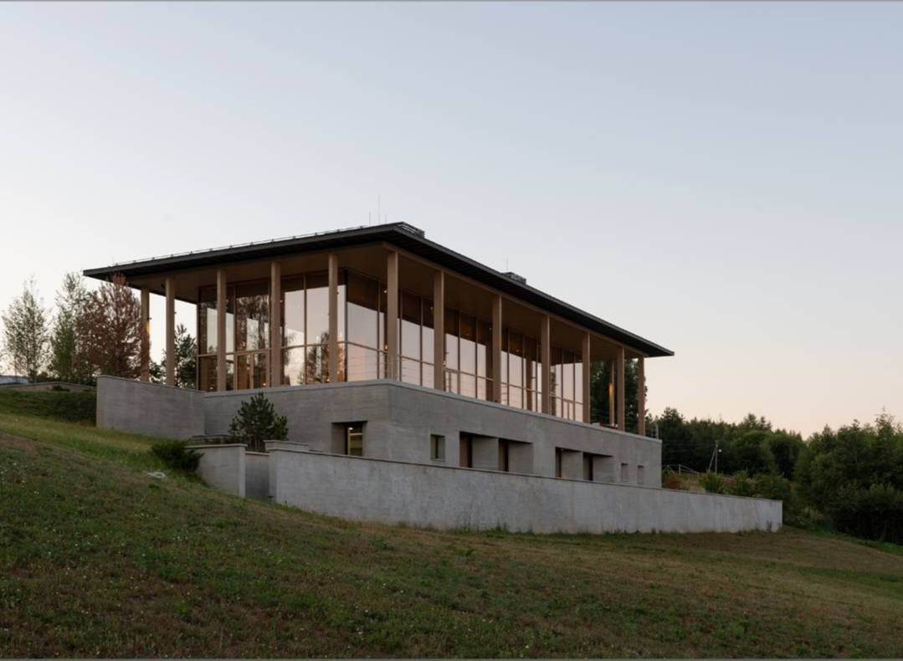
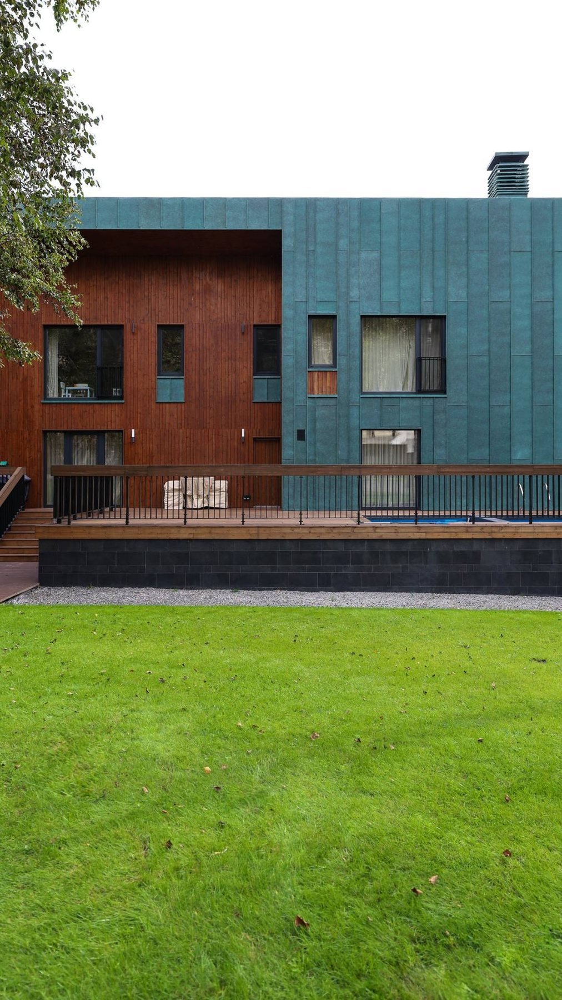

Премиальный интерьер
Дерево важно там, где заказчик ощущает окно изнутри: фактура, тепло материала, мебельная логика.
Дерево / Stoller
Деревянное окно — это не только теплотехника, но и ощущение материала в интерьере. Для премиальных домов окно работает как мебель, свет, вид и часть архитектуры.
Дерево важно там, где заказчик ощущает окно изнутри: фактура, тепло материала, мебельная логика.
Снаружи алюминий защищает от погоды, внутри остаётся натуральная поверхность и спокойная архитектура.
Для загородных домов и резиденций дерево может быть частью большой панорамной истории.
Такие решения нужно считать и стыковать с фасадом, отделкой, влажностью и эксплуатацией.

